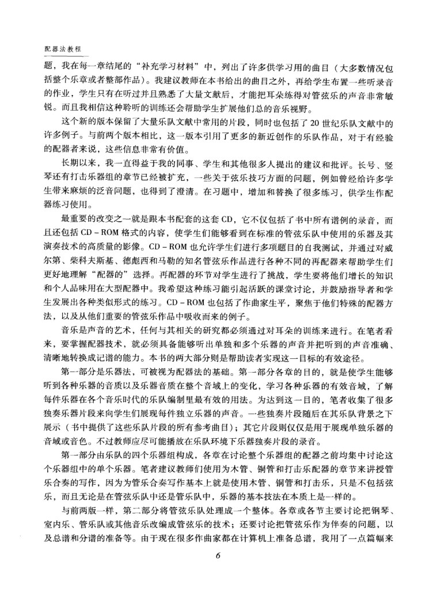
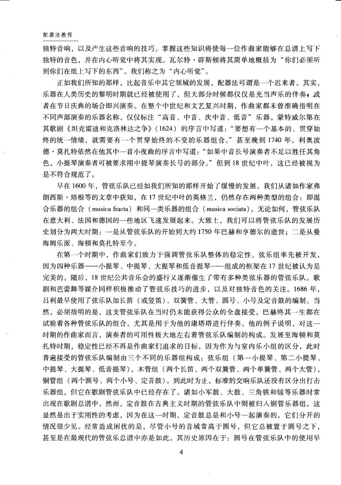
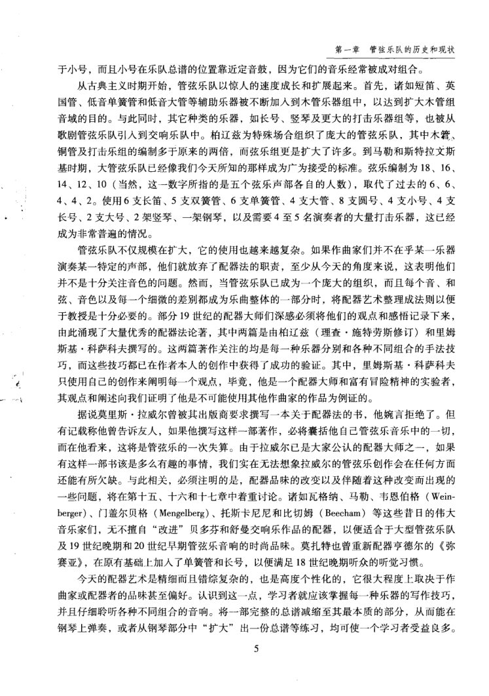
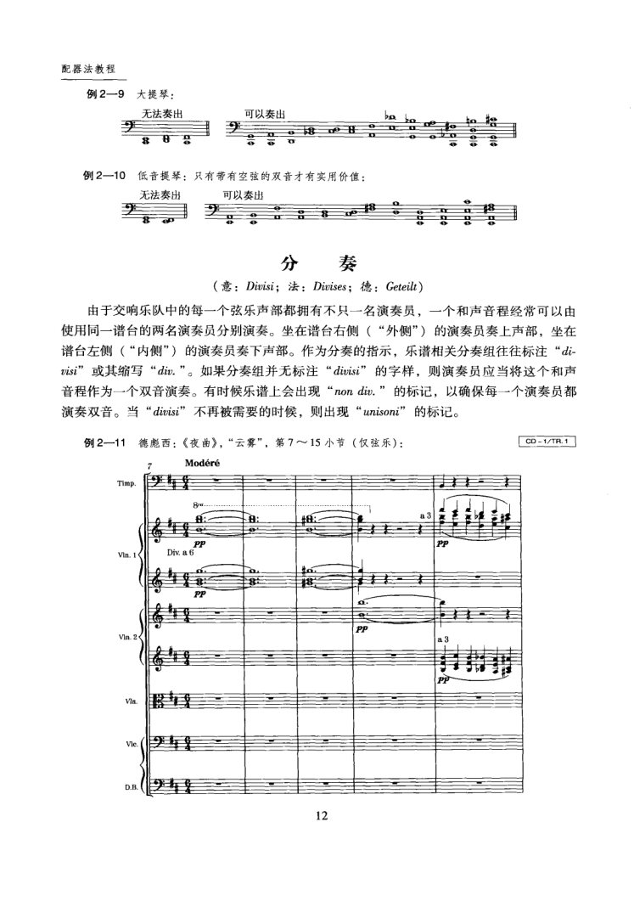
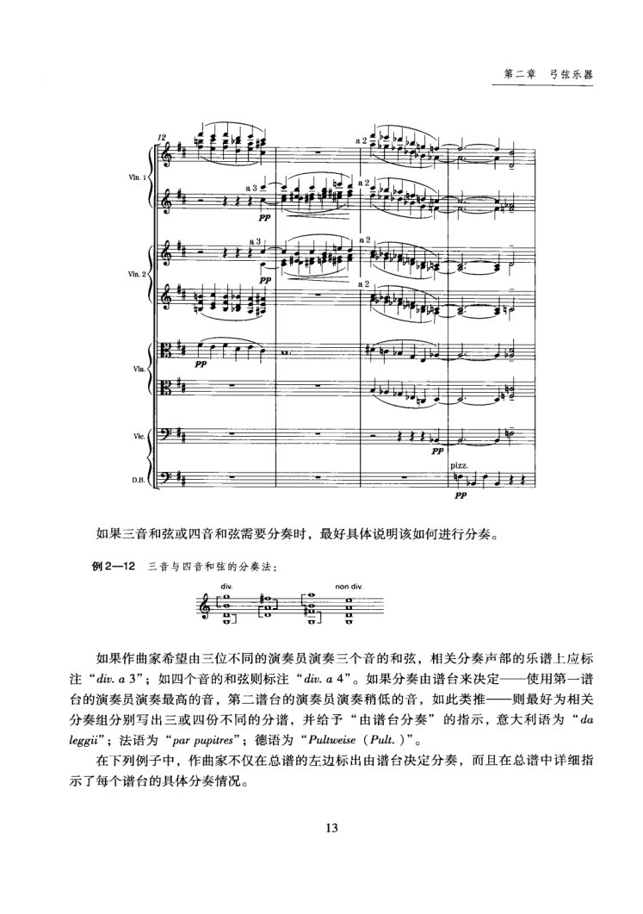

PDF 第 9 页
阿德勒上 · 第三版前言
配器法教程
）
括整个乐章或者整部作品）。我建议教师在本书给出的曲目之外，再给学生布置一些听录音
的作业，学生只有在听过并且熟悉了大量文献后，才能把耳朵练得对管弦乐的声音非常敏
锐。而且我相信这种聆听的训练还会帮助学生扩展他们总的音乐视野。
这个新的版本保留了大量乐队文献中常用的片段，同时也包括了20世纪乐队文献中的
许多例子。与前两个版本相比，这一版本引用了更多的新近创作的乐队作品，对于有经验
的配器者来说，这些信息非常有价值。
长期以来，我一直得益于我的同事、学生和其他很多人提出的建议和批评。长号、竖
琴还有打击乐器组的章节已经被扩充，一些关于弦乐技巧方面的问题，例如曾经给许多学
生带来麻烦的泛音问题，也得到了澄清。在习题中，增加和替换了很多练习，供学生作配
器练习使用。
最重要的改变之一就是跟本书配套的这套CD，它不仅包括了书中所有谱例的录音，而
且还包括CD-ROM格式的内容，使学生们能够看到在标准的管弦乐队中使用的乐器及其
演奏技术的高质量的影像。CD-ROM也允许学生们进行多项题目的自我测试，并通过对威
尔第、柴科夫斯基、德彪西和马勒的知名管弦乐作品进行各种不同的再配器来帮助学生们
更好地理解“配器的”选择。再配器的环节对学生进行了挑战，学生要将他们增长的知识
和个人品味用在大型配器中。我希望这种练习能引起活跃的课堂讨论，并鼓励指导者和学
生发展出各种类似形式的练习。CD-ROM也包括了作曲家生平，聚焦于他们特殊的配器方
法，以及从他们重要的管弦乐作品中吸收而来的例子。
音乐是声音的艺术，任何与其相关的研究都必须通过对耳朵的训练来进行。在笔者看
来，要掌握配器技术，就必须具备能够听出单独和多个乐器的声音并把听到的声音准确、
清晰地转换成记谱的能力。本书的两大部分则是帮助读者实现这一目标的有效途径。
第一部分是乐器法，可被视为配器法的基础。第一部分各章的目的，就是使学生能够
听到各种乐器的音质以及乐器音质在整个音域上的变化，学习各种乐器的有效音域，了解
每件乐器在各个音乐时代的乐队编制里最有效的用法。为达到这一目的，笔者收集了很多
独奏乐器片段来向学生们展现每件独立乐器的声音。一些独奏片段随后在其乐队背景之下
展示（书中提供了这些乐队片段的所有参考曲目）：其它片段则仅仅是用于展现单独乐器的
音域或音色。不过教师应尽可能播放在乐队环境下乐器独奏片段的录音。
第一部分由乐队的四个乐器组构成，各章在讨论整个乐器组的配器之前均集中讨论这
个乐器组中的单个乐器。笔者建议教师们使用为木管、铜管和打击乐配器的章节来讲授管
乐合奏的写作，因为为管乐合奏写作基本上就是使用木管、铜管和打击乐，只是不包括弦
乐，而且无论是在管弦乐队中还是管乐队中，乐器的基本技法在本质上是一样的。
与前两版一样，第二部分将管弦乐队处理成一个整体。各章或各节主要讨论把钢琴、
室内乐、管乐队或其他音乐改编成管弦乐的技术；还要讨论把管弦乐作为伴奏的问题，以
及总谱和分谱的准备等。由于现在很多作曲家都在计算机上准备总谱，我用了一点篇幅来
6
本手册使用本页- adler.inner-hearing
配器训练的核心能力是把听到的乐器组合准确转换成记谱，并在写作时听见纸面结果。“要掌握配器技术，就必须具备能够听出单独和多个乐器的声音并把听到的声音准确、清晰地转换成记谱的能力。”
- adler.instrument-basics
乐器法需要掌握音质在全音域的变化、有效音域以及各时代编制中的实际用法。“第一部分各章的目的，就是使学生能够听到各种乐器的音质以及乐器音质在整个音域上的变化，学习各种乐器的有效音域，了解每件乐器在各个音乐时代的乐队编制里最有效的用法。”
- adler.contemporary-repertoire
第三版保留20世纪乐队文献例子，并扩充了长号、竖琴与打击乐组章节。“这个新的版本保留了大量乐队文献中常用的片段，同时也包括了20世纪乐队文献中的许多例子。……长号、竖琴还有打击乐器组的章节已经被扩充。”
PDF 第 16 页
阿德勒上 · 印刷 p.4 · 第一章 管弦乐队的历史和现状
配器法教程
独特音响，以及产生这些音响的技巧。掌握这些知识将使每一位作曲家能够在总谱上写下
独特的音色，并在内心听觉中将其实现。瓦尔特·辟斯顿将其简单地概括为“你们必须听
到你们在纸上写下的东西”。我们称之为“内心听觉”。
正如我们所知的那样，比起音乐中其它领域的发展，配器法可谓是一个迟来者。其实，
乐器在人类历史的黎明时期就已经被使用了，但大部分时候都仅仅是充当声乐的伴奏，或
者在节日庆典的场合即兴演奏。在整个中世纪和文艺复兴时期，作曲家都未曾准确指明在
不同声部演奏的乐器名称，仅仅标注“高音、中音、次中音、低音”乐器。蒙特威尔第在
其歌剧《坦克雷迪和克洛林达之争》（1624）的序言中写道：“要想有一个基本的、贯穿始
终的统一情绪，就需要有一个贯穿始终的不变的乐器组合。”甚至晚到1740年，利奥波
德·莫扎特依然在他其中一首小夜曲的序言中写道：“如果中音长号演奏者不足以胜任其角
色，小提琴演奏者可被要求用中提琴演奏长号的部分。”但到18世纪中叶，这已经被视为
是不符合规范了。
早在1600年，管弦乐队已经如我们所知的那样开始了缓慢的发展。我们从诸如作家弗
朗西斯·培根等的文章中获知，在17世纪中叶的英格兰，仍然存在两种类型的组合：即混
合乐器的组合（musicafracta）和同一类乐器的组合（musica sociata）。无论如何，管弦乐队
在意大利、法国和德国的一些地区飞速发展起来。大致上，我们可以将管弦乐队的发展历
史划分为两大时期：一是从管弦乐队的开始到大约1750年巴赫和亨德尔的逝世；二是从曼
海姆乐派、海顿和莫扎特至今。
在第一个时期中，作曲家们致力于强调管弦乐队整体的稳定性。弦乐组率先被开发，
因为四种乐器一小提琴、中提琴、大提琴和低音提琴一组成的框架在17世纪被认为是
完美的。随后，18世纪公共音乐会的盛行又逐渐催生了带有多种类弦乐器的管弦乐队。歌
剧和芭蕾舞等媒介同样积极推动了管弦乐技巧的进步，以及对独特音色的关注。1686年，
吕利最早使用了弦乐队加长笛（或竖笛）、双簧管、大管、圆号、小号及定音鼓的编制。当
然，必须指明的是，这支管弦乐队在当时仍未能获得公众的全盘接受。巴赫终其一生都在
试验着各种管弦乐队的组合，尤其是用于为他的康塔塔进行伴奏。他的例子说明，对这一
时期的作曲家而言，演奏者的可用性极大地左右着管弦乐队编制的构成。发展至海顿和莫
扎特时期，稳定性已经不再是作曲家们追求的目标，因为作为与室内乐小组的区分，此时
普遍接受的管弦乐队编制由三个不同的乐器组构成：弦乐组（第一小提琴、第二小提琴、
中提琴、大提琴、低音提琴），木管组（两个长笛、两个双簧管、两个单簧管、两个大管），
铜管组（两个圆号、两个小号、定音鼓）。到此时为止，标准的交响乐队还没有区分出打击
乐器组，但它在歌剧管弦乐队中已经存在了。诸如小军鼓、大鼓、三角铁和等乐器时常
出现在歌剧总谱中。然而，定音鼓在古典主义时期的管弦乐队中则被归人铜管乐器组。这
显然是出于实用性的考虑，因为在这一时期，定音鼓总是和小号一起演奏的，它们分开的
情况很少见。经常造成困扰的是，尽管小号的音域常高于圆号，但它总被置于圆号之下，
甚至是在最现代的管弦乐总谱中亦是如此。其历史原因在于：圆号在管弦乐队中的使用早
4
本手册使用本页- adler.string-core
17世纪，由小提琴、中提琴、大提琴与低音提琴组成的弦乐四声部已成为稳定的乐队框架。“弦乐组率先被开发，因为四种乐器——小提琴、中提琴、大提琴和低音提琴——组成的框架在17世纪被认为是完美的。”
- adler.history-classical
海顿、莫扎特时期，常见编制由弦乐、木管、铜管三个基本组构成。“发展至海顿和莫扎特时期……普遍接受的管弦乐队编制由三个不同的乐器组构成：弦乐组……木管组……铜管组……”
- shi.percussion-role
打击乐与色彩乐器通常不作为独立的基本乐器组，而用于加强乐队的节奏、音响与色彩。“到此时为止，标准的交响乐队还没有区分出打击乐器组，但它在歌剧管弦乐队中已经存在了。”
PDF 第 17 页
阿德勒上 · 印刷 p.5 · 第一章 管弦乐队的历史和现状
第一章管弦乐队的历史和现状
于小号，而且小号在乐队总谱的位置靠近定音鼓，因为它们的音乐经常被成对组合。
从古典主义时期开始，管弦乐队以惊人的速度成长和扩展起来。首先，诸如短笛、英
国管、低音单簧管和低音大管等辅助乐器被不断加入到木管乐器组中，以达到扩大木管组
音域的目的。与此同时，其它种类的乐器，如长号、竖琴及更大的打击乐器组等，也被从
歌剧管弦乐队引入到交响乐队中。柏辽兹为特殊场合组织了庞大的管弦乐队，其中木管、
铜管及打击乐组的编制多于原来的两倍，而弦乐组更是扩大了许多。到马勒和斯特拉文斯
基时期，大管弦乐队已经像我们今天所知的那样成为广为接受的标准。弦乐编制为18、16、
14、12、10（当然，这一数字所指的是五个弦乐声部各自的人数），取代了过去的6、6、
4、4、2。使用6支长笛、5支双簧管、6支单簧管、4支大管、8支圆号、4支小号、4支
长号、2支大号、2架竖琴、一架钢琴，以及需要4至5名演奏者的大量打击乐器，这已经
成为非常普遍的情况。
管弦乐队不仅规模在扩大，它的使用也越来越复杂。如果作曲家们并不在乎某一乐器
演奏某一特定的声部，他们就放弃了配器法的职责，至少从今天的角度来说，这表明他们
并不是十分关注音色的问题。然而，当管弦乐队已成为一个庞大的组织，而且每个音、和
弦、音色以及每一个细微的差别都成为乐曲整体的一部分时，将配器艺术整理成法则以便
于教授是十分必要的。部分19世纪的配器大师们深感必须将他们的观点和感倍记录下来，
由此涌现了大量优秀的配器法论著，其中两篇是由柏辽兹（理查·施特劳斯修订）和里姆
斯基·科萨科夫撰写的。这两篇著作关注的均是每一种乐器分别和各种不同组合的手法技
巧，而这些技巧都已在作者本人的创作中获得了成功的验证。其中，里姆斯基·科萨科夫
只使用自己的创作来阐明每一个观点，毕竞，他是一个配器大师和富有冒险精神的实验者，
其观点和阐述向我们证明了他是不可能使用其他作曲家的作品为例证的。
据说莫里斯·拉威尔曾被其出版商要求撰写一本关于配器法的书，他婉言拒绝了。但
有记载称他曾告诉友人，如果他撰写这样一部著作，必将囊括他自己管弦乐音乐中的一切，
而在他看来，这将是管弦乐的一次失算。由于拉威尔已是大家公认的配器大师之一，如果
有这样一部书该是多么有趣的事情，我们实在无法想象拉威尔的管弦乐创作会在任何方面
还能有所欠缺。与此相关，必须注明的是，配器品味的改变以及伴随着这种改变而出现的
一些问题，将在第十五、十六和十七章中着重讨论。诸如瓦格纳、马勒、韦恩伯格（Wein-
berger）、门盖尔贝格（Mengelberg）、托斯卡尼尼和比切姆（Beecham）等这些昔日的伟大
及19世纪晚期和20世纪早期管弦乐音响的时尚品味。莫扎特也曾重新配器亨德尔的《弥
赛亚》，在原有基础上加人了单簧管和长号，以便满足18世纪晚期听众的听觉习惯。
今天的配器艺术是精细而且错综复杂的，也是高度个性化的，它很大程度上取决于作
曲家或配器者的品味甚至偏好。认识到这一点，学习者就应该掌握每一种乐器的写作技巧，
并且仔细聆听各种不同组合的音响。将一部完整的总谱减缩至其最本质的部分，从而能在
钢琴上弹奏，或者从钢琴部分中“扩大”出一份总谱等练习，均可使一个学习者受益良多。
5
PDF 第 24 页
阿德勒上 · 印刷 p.12 · 第二章 弓弦乐器 · 分奏
配器法教程
例2一9大提琴：
无法奏出
可以奏出
0
例2一10低音提琴：只有带有空弦的双音才有实用价值：
无法奏出
可以奏出
奏
分
（意：Divisi；法：Diurises；德：Geteilt）
由于交响乐队中的每一个弦乐声部都拥有不只一名演奏员，一个和声音程经常可以由
使用同一谱台的两名演奏员分别演奏。坐在谱台右侧（“外侧”）的演奏员奏上声部，坐在
谱台左侧（“内侧”）的演奏员奏下声部。作为分奏的指示，乐谱相关分奏组往往标注“di-
“，，
演奏双音。当“dirisi”不再被需要的时候，则出现“unisoni”的标记。
例2—11德彪西：《夜曲》，“云雾”，第7~15小节（仅弦乐）：
31/1- 00
Modere
Timp
8.
:
Div. a 6
PP
PP
PP
12
PDF 第 25 页
阿德勒上 · 印刷 p.13 · 第二章 弓弦乐器 · 三音与四音和弦的分奏
第二章弓弦乐器
PP
如果三音和弦或四音和弦需要分奏时，最好具体说明该如何进行分奏。
例2一12三音与四音和弦的分奏法：
div.
如果作曲家希望由三位不同的演奏员演奏三个音的和弦，相关分奏声部的乐谱上应标
注“diu.a3"；如四个音的和弦则标注“diu.a4”。如果分奏由谱台来决定一使用第一谱
台的演奏员演奏最高的音，第二谱台的演奏员演奏稍低的音，如此类推一则最好为相关
分奏组分别写出三或四份不同的分谱，并给予“由谱台分奏”的指示，意大利语为“da
leggi”；法语为“par pupitres”；德语为“Pultweise（Pult.）”。
在下列例子中，作曲家不仅在总谱的左边标出由谱台决定分奏，而且在总谱中详细指
示了每个谱台的具体分奏情况。
13